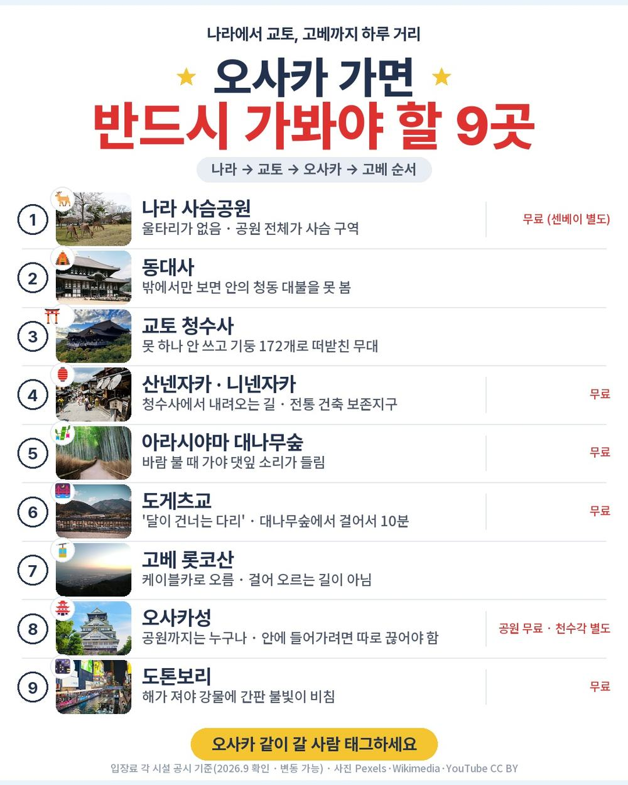
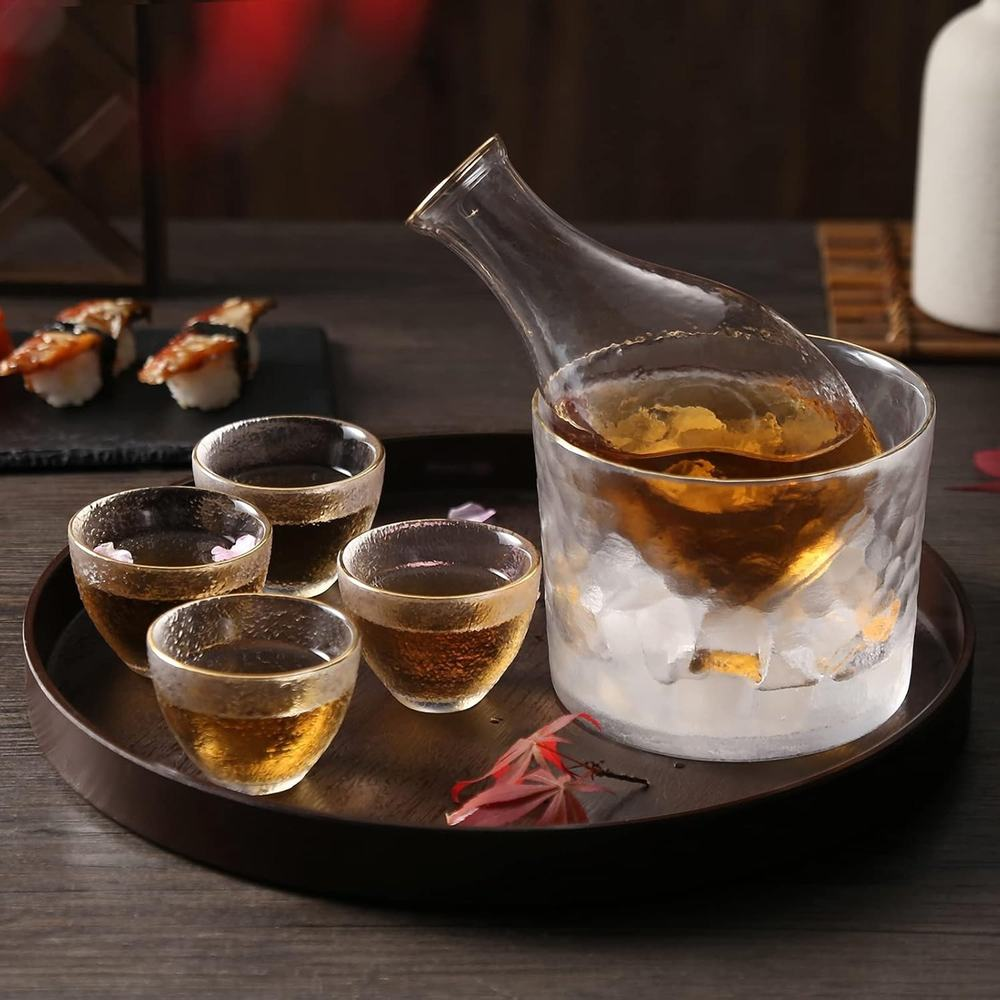
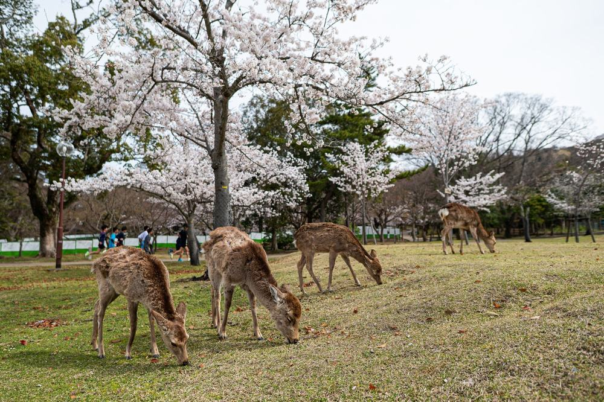
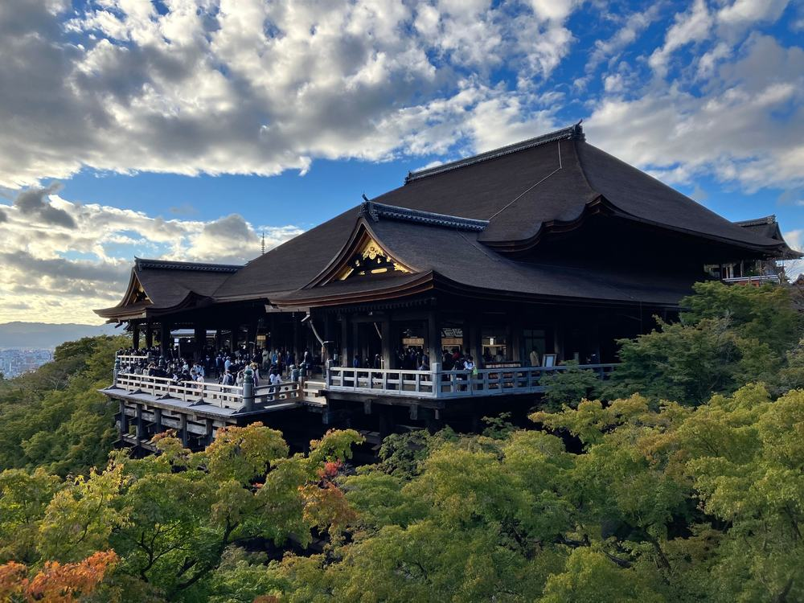
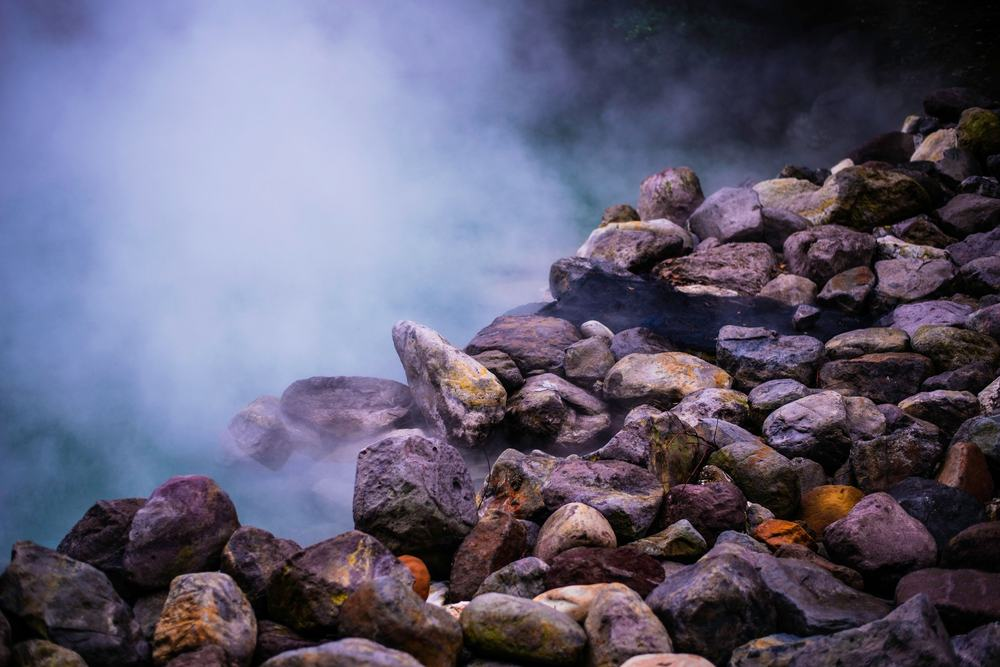
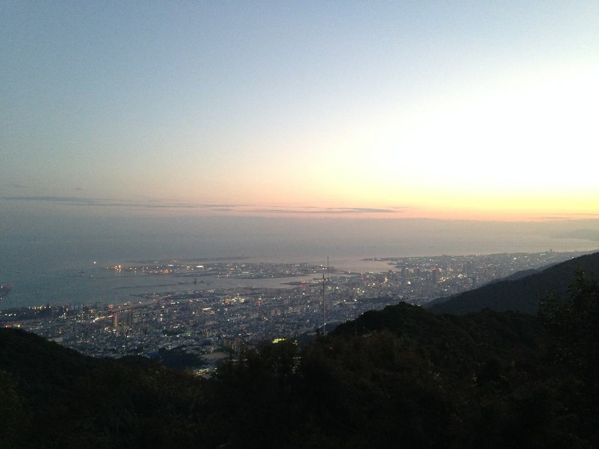

노랑풍선 오사카 패키지 여행 80만원, 나라 온천에 교토 청수사까지 넣은 이유

가을에 짧게 다녀올 데를 찾다가 부산 출발 상품을 뒤지고 있었음. 김해에서 뜨는 일본 노선이 늘었는데 정작 패키지는 후쿠오카만 잔뜩 나옴.
그러다 오사카 4일짜리가 하나 걸림. 그런데 일정표를 여는 순간 좀 이상했음. 나라, 교토, 고베, 오사카가 다 들어 있음. 3박 4일에 네 도시임.
결론 — 추천. 값 대비 도는 곳이 많고 첫 밤이 천연온천임. 다만 오사카성 안까지 들어가 보고 싶은 분, 2일차 돌계단이 힘든 분, 수도권 사는 분은 아님.
싼 티가 나는 구성인지, 아니면 진짜로 저 값에 저게 다 되는지 궁금해서 원문을 뜯어봤음.
| 항목 | 내용 |
|---|---|
| 가격 | 1인 805,000원 (2인 1실 기준) |
| 여행사 | 노랑풍선 |
| 항공 | 에어부산 직항 · 김해 11:30 → 간사이 13:00 / 귀국 14:00 → 김해 15:30 |
| 숙소 | 나라 천연온천 1박 + 오사카 시내 2박 (2인 1실) |
| 일정 | 3박 4일 · 전 일정 전용버스 · 한국어 가이드 |
| 가는 곳 | 나라 · 교토 · 아라시야마 · 오사카 · 고베 (관광 11회) |
| 순서 | 다루는 것 | 한 줄 결론 |
|---|---|---|
| 1 | 구성 뜯어보기 | 관광 11회 입장료가 전부 상품가 안 |
| 2 | 일정 살펴보기 | 2일차에 걷는 게 몰려 있음 |
| 3 | 자유여행 VS 패키지 | 직접 짜면 86만원 | 값은 비슷한데 환승과 짐이 빠짐 |
1. 구성 뜯어보기
요약 — 관광 11회 입장료·전용버스·가이드·보험이 다 들어 있음. 현지에서 반드시 더 내는 돈은 가이드 경비 4만원 하나임.
1-1. 80만 5천원에 들어 있는 것

포함 항목을 원문에서 그대로 옮기면 이럼.
- 왕복 항공권 + 유류할증료 + 세금
- 나라 천연온천 호텔 1박 + 오사카 시내 호텔 2박 (2인 1실)
- 식사 6회
- 관광 11회 입장료 전부
- 전 일정 전용버스 · 한국어 가이드 · 여행자보험
관광 11회가 핵심임. 동대사, 청수사, 롯코 케이블카처럼 돈 내고 들어가는 곳이 다 포함임. 간사이 저가 상품 중에는 입장료를 현지에서 따로 걷는 것도 있어서 이건 확인할 값어치가 있음.
고베에서 사케 양조장(키쿠마사무네 기념관) 견학과 무료 시음까지 들어 있는 것도 원문에 적혀 있음.
▶ 출발일별 요금 확인하기
https://naver.me/xNpeyohM — 출발일에 따라 값이 달라짐
1-2. 쇼핑과 선택관광

쇼핑은 1회임. 일본관광공사 면세점, 잡화, 40~60분. 간사이 4일짜리에 쇼핑 1회면 적은 편임.
선택관광은 3일차 유니버설 스튜디오 하나임. 1인 80,000원이고 1일 프리패스와 왕복 차량이 들어 있음. 고르지 않으면 그날은 고베를 돎.
다만 USJ를 고른 날은 중식·석식이 본인 부담이고 가이드도 같이 가지 않음. 출발 7일 전까지 신청해야 함.
1-3. 현장에서 더 낼 돈
| 항목 | 금액 | 비고 |
|---|---|---|
| 가이드·기사 경비 | 80,000원 | 1인 4만원 · 현지 지불 |
| 자유식 3끼 | 약 90,000원 | 2·3일차 석식, 4일차 중식 |
| 오사카성 천수각 | 별도 | 공원까지만 포함 |
| 싱글룸 쓰면 | 120,000원 | 전 일정 |
| 합계 (2인) | 약 170,000원 | 상품가 161만원 + 17만 = 178만원 |
USJ를 고르면 2인 16만원이 더 붙음.
1-4. 1절 자주 나오는 질문
Q. 관광 11회에 입장료가 진짜 다 들어 있나요?
A. 원문 포함사항에 '일정표상 관광지 입장료'로 적혀 있음. 동대사·청수사·롯코 케이블카가 다 여기에 들어감. 다만 오사카성 천수각은 불포함이라고 따로 명기돼 있음.
Q. 인솔자가 같이 가나요?
A. 인솔자는 불포함임. 대신 한국어 가이드가 전 일정을 함께 함. 가이드는 출발 이틀 전에 확정되고, 출발 하루 전 오후에 대표자에게 연락이 옴.
Q. 쇼핑 안 가도 되나요?
A. 일정에 1회 들어 있어서 장소에는 같이 감. 40~60분이고 사는 건 자유임. 환불도 가능하다고 적혀 있음.
2. 일정 살펴보기
요약 — 1일차 나라, 2일차 교토·아라시야마·오사카, 3일차 고베(또는 USJ), 4일차 오사카성. 걷는 게 2일차에 몰려 있음.
2-1. 하루하루 어디를 가나

| 일차 | 가는 곳 | 식사 | 숙소 |
|---|---|---|---|
| DAY 1 | 김해 11:30 → 간사이 13:00 → 나라 사슴공원 · 동대사 | 석식 | 나라 천연온천 |
| DAY 2 | 청수사 · 산넨자카 → 아라시야마(대나무숲·도게츠교·노노미야) → 신사이바시·도톤보리 | 조·중 | 오사카 시내 |
| DAY 3 | 고베 롯코산 · 모자이크 · 사케 양조장 · 기타노이진칸 · 난킨마치 (또는 USJ 전일) | 조·중 | 오사카 시내 |
| DAY 4 | 오사카성(천수각 불포함) → 면세점 → 간사이 14:00 → 김해 15:30 | 조 | — |
첫날부터 오사카를 거치지 않고 바로 나라로 들어감. 공항에서 한 시간임. 도착하는 날 저녁이 현지식으로 포함이라 첫날부터 챙겨 먹게 됨.
2-2. 2일차가 제일 바쁜 날

2일차는 나라에서 교토로 올라가 청수사를 보고, 아라시야마를 거쳐 저녁에 오사카로 들어옴. 이동 누계가 두 시간 반쯤임.
문제는 거리가 아니라 계단임. 청수사는 참배길이 오르막이고, 내려오는 길인 산넨자카·니넨자카가 돌계단임. 무릎이 불편하시면 이날 하루가 고됨.

대신 아라시야마는 전부 평지임. 대나무숲, 도게츠교, 노노미야 신사가 걸어서 이어져 있음.
저녁은 도톤보리에서 자유식임. 신사이바시 아케이드가 점포 180개쯤 이어지고 그 끝이 도톤보리라 고를 게 많음.
2-3. 호텔은 미확정임

솔직히 이건 짚고 가야 함. 원문에 숙박시설 미확정, 출발 3~4일 전 문자 안내라고 적혀 있음.
상품에 적힌 곳은 나라가 온야도 노노 나라(천연온천), 오사카가 IP시티 호텔임. 대체 호텔로 파크센트럴 사쿠라 신사이바시, 후지야, 텐노지 크리스탈이 같이 적혀 있음.
호텔 이름을 미리 알아야 마음이 놓이는 분께는 걸리는 점임. 대신 등급과 지역은 정해져 있음 — 나라는 천연온천, 오사카 네 곳은 전부 시내임. 값 낮추려고 공항 근처에 재우는 상품이 아니라는 뜻임.
2-4. 2절 자주 나오는 질문
Q. 많이 걷나요?
A. 2일차가 제일 많음. 청수사 오르막과 산넨자카 돌계단이 그날에 몰려 있음. 나머지 날은 평지 위주고, 고베 롯코산은 케이블카로 올라감.
Q. 오사카 호텔이 외곽인가요?
A. 아님. 적혀 있는 네 곳이 전부 시내임(신사이바시·난바·텐노지 권역). 저녁 자유시간에 걸어 나갈 수 있음.
Q. 3일차에 USJ를 안 가면 뭘 하나요?
A. 고베를 돎. 롯코산 케이블카, 하버랜드 모자이크, 사케 양조장 시음, 기타노이진칸, 난킨마치임. 추가금은 없음.
3. 자유여행 VS 패키지 | 직접 짜면 86만원
요약 — 직접 짜도 86만원쯤 듦. 값은 거의 같은데 사철 환승과 짐 옮기기가 빠짐.
3-1. 같은 일정을 직접 짜면

같은 일정을 혼자 짠다고 치고 항목별로 계산해 봄. 10월 평일, 2인 1실 기준 1인분임.
| 항목 | 금액 | 근거 |
|---|---|---|
| 김해–간사이 왕복 항공 | 330,000원 | 10월 평일 LCC 왕복 · 위탁수하물 포함 기준 |
| 나라 천연온천 호텔 1박 | 110,000원 | 동급 천연온천 호텔 2인 1실 1박의 1인분 |
| 오사카 시내 호텔 2박 | 160,000원 | 신사이바시 권역 3성 2박의 1인분 |
| 공항 ↔ 시내 왕복 | 28,000원 | 하루카·난카이 편도 1,300~1,800엔 |
| 나라·교토·아라시야마·고베 이동 | 75,000원 | 사철·JR 3일치 실비 |
| 입장료 (동대사·청수사·롯코 케이블카 등) | 32,000원 | 관광 11회 중 유료 구간 |
| 식사 6회 | 96,000원 | 패키지 포함분과 같은 끼니 · 1회 1,500~2,500엔 |
| 여행자보험 | 15,000원 | 4일 기준 |
| 짐 이동 · 코인로커 | 10,000원 | 나라 → 오사카 호텔 옮길 때 |
| 가이드 | — | 자유여행은 없음 |
| 합계 | 약 856,000원 |
패키지는 805,000원 + 가이드 경비 40,000원 = 845,000원임.
3-2. 그래서 뭐가 다른가
값은 사실상 같음. 1만원 차이면 없는 차이임. 그러니 값으로 고를 상품은 아님.
갈리는 건 3일 동안 짐과 환승을 누가 감당하느냐임. 자유여행으로 이 일정을 하려면 이렇게 됨.
- 간사이공항 → 나라: 난카이·긴테쓰 환승 1~2회
- 나라 → 교토: 긴테쓰 또는 JR
- 교토 → 아라시야마: 한 번 더 갈아탐
- 아라시야마 → 오사카: 또 갈아탐
- 오사카 → 고베: 한신·JR
- 그사이 나라 호텔에서 오사카 호텔로 짐을 옮김
패키지는 이 전부가 전용버스 한 대로 붙음. 호텔도 도착하면 방 앞까지 짐이 감.
여기에 가이드가 붙음. 자유여행 계산표에 가이드 행이 비어 있는 게 그 뜻임 — 자유여행에는 아예 없는 항목이라 0원인 게 아니라 살 수 없는 것임.
3-3. 어느 쪽이 맞나
| 자유여행이 맞음 | 패키지가 맞음 |
|---|---|
| 오사카 한 도시만 진득하게 | 나라·교토·고베까지 다 보고 싶음 |
| 일본어나 구글맵이 편함 | 환승과 시간표가 부담 |
| 천수각·특정 전시를 꼭 봐야 함 | 동선을 남이 짜 주는 게 편함 |
| 짐 들고 옮겨도 괜찮음 | 호텔 옮길 때 짐 옮기기가 부담 |
| 식사를 직접 고르고 싶음 | 끼니 챙기는 게 일이라고 느껴짐 |
3-4. 3절 자주 나오는 질문
Q. 자유여행이 더 싸지 않나요?
A. 계산해 보면 자유여행이 856,000원, 패키지가 845,000원임. 거의 같음. 다만 자유여행 쪽 숫자는 10월 평일 기준이라 주말이나 연휴면 항공·숙박이 더 올라감.
Q. 오사카성 천수각을 꼭 보고 싶으면요?
A. 이 상품으로는 못 봄. 원문에 '천수각 불포함'으로 적혀 있고 공원까지만 감. 천수각이 목적이면 자유여행이 맞음.
Q. 부산에 안 사는데 이 상품을 봐도 되나요?
A. 김해공항 출발이라 수도권이면 국내 이동이 먼저 붙음. 전날 부산에서 1박까지 하면 그 값이 더해져서 계산이 달라짐. 인천 출발 오사카 상품을 보시는 게 나음.
마무리
정리하면 이럼.
추천함. 80만 5천원에 나라·교토·아라시야마·고베·오사카를 돌고, 관광 11회 입장료가 다 들어 있고, 첫 밤은 천연온천에 오사카는 시내에서 두 밤임. 현지에서 반드시 더 내는 돈은 가이드 경비 4만원 하나임.
이런 분은 고르면 안 됨. 오사카성 안까지 들어가 보고 싶은 분, 2일차 돌계단이 힘든 분, 수도권에 사는 분.
걸리는 점이 있긴 한데 상품 흠이라기보다 맞는 사람과 안 맞는 사람을 가르는 조건에 가까움.
▶ 오늘 기준 출발일별 요금 보기
https://naver.me/xNpeyohM
패키지 고를 때 뭘 봐야 하는지는 따로 정리해 뒀음 → https://blog.naver.com/robotnady10/224425177586
함께 보면 좋은 글
참좋은여행 세부 패키지 여행 39만원, 호핑투어에 전신마사지까지 포함인 이유
https://blog.naver.com/robotnady10/224422306429
하나투어 다낭 패키지 여행 32만원, 바나힐 골든브릿지까지 포함인 이유
https://blog.naver.com/robotnady10/224421530435
이 글에는 제휴 링크가 포함되어 있으며, 링크를 통해 예약하시면 일정 수수료를 받습니다. 가격은 동일합니다. 가격과 구성은 2026년 9월 26일 확인 기준이며 출발일에 따라 달라질 수 있습니다.
사진 출처: os_todaiji_1 — Pexels / os_sake_tasting_1 — Web(Bing) / os_nara_deer_1 — Pexels / os_kiyomizu_1 — Pexels / os_arashiyama_bamboo_1 — Pexels / fk_onsen_outdoor_1 — Pexels / os_rokko_view_1 — Wikimedia Commons